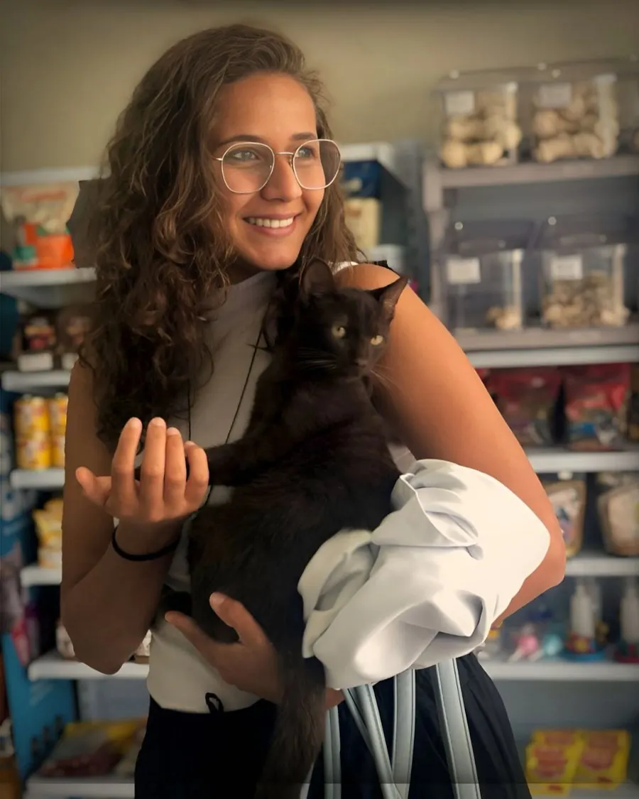

São Mateus e região · ES
Você não precisa sair de casa para cuidar do seu pet.
Consultas, vacinas, atestado de viagem e coleta de exames em domicílio, para cães e gatos, com a Dra. Nathalia Andrade. Sem deslocamento, sem sala de espera: só você, seu pet e o atendimento que ele precisa.
- Atendimento em domicílio
- Cães e gatos
- Seg a sex, 8h–19h · Sáb, 8h–13h
Quem faz a consulta
A consulta acontece onde seu pet já se sente seguro.
Nathalia Andrade é médica veterinária formada pelo Centro Universitário do Espírito Santo (UNESC), em Colatina, com pós-graduação em Clínica Médica e Cirúrgica pela Qualittas. Atua com pequenos animais, cães e gatos.
Trabalhou em clínicas e hospitais antes de escolher o atendimento domiciliar: um serviço mais próximo, com horário flexível e mais conforto para o pet e para o tutor. É o tipo de consulta que dispensa a caixa de transporte, a viagem de carro e a sala de espera com outros animais.
Cada atendimento é combinado por WhatsApp diretamente com ela, sem intermediários.

Por que em casa
O que muda quando a veterinária vai até o pet.
-
Menos estresse, exame mais confiável
Fora de casa, o medo do transporte e da sala de espera altera frequência cardíaca e temperatura do pet, o que pode dificultar um exame preciso. Em casa, no ambiente que ele já conhece, esse ruído tende a ser menor.
-
Pensado também para quem não pode sair de casa
Não é só sobre o pet. Tutores com rotina apertada, mais de um animal para levar, ou dificuldade de locomoção encontram no atendimento domiciliar uma alternativa real, não um luxo.
-
Horário que cabe na sua rotina
Boa parte dos atendimentos é encaixada com quem só chega em casa depois das 18h. O horário é combinado caso a caso, direto com a Dra. Nathalia.
-
Atendimento direto, sem central de agendamento
Quem responde no WhatsApp é a própria Dra. Nathalia. Sem triagem, sem repetir o mesmo relato para pessoas diferentes.
O que está incluso
Serviços realizados em domicílio.
-
Consultas
Avaliação clínica no ambiente onde o pet já se sente à vontade.
-
Vacinas
Esquema vacinal em dia, aplicado em casa, sem fila e sem contato com outros animais.
-
Atestado de viagem
Documentação para viagem do pet, conforme a exigência da companhia aérea ou rodoviária.
-
Procedimentos ambulatoriais
Pequenos procedimentos que não exigem estrutura hospitalar.
-
Coleta de exames
Coleta feita em casa; o material segue para análise laboratorial.
Casos que precisam de centro cirúrgico ou exame de imagem não são feitos em domicílio. Nesses casos a Dra. Nathalia indica os locais disponíveis na região e a escolha final é sua, de acordo com localização e orçamento.
Como funciona
Horários, área de atendimento e pagamento.
-
Horários
- Segunda a sexta, 8h às 19h
- Sábado, 8h às 13h
-
Área de atendimento
São Mateus e região (ES)
Guriri e demais bairros da cidade. Mora um pouco mais longe? Manda mensagem de qualquer forma, dependendo do caso, dá para combinar. -
Pagamento
Pix, dinheiro ou cartão
Não há atendimento por plano de saúde pet.
Perguntas frequentes
Dúvidas que aparecem antes da primeira consulta.
Atende emergências?
Para consultas, vacinas, coleta de exames e procedimentos ambulatoriais, sim. Em emergências que exigem estrutura hospitalar (internação, cirurgia de urgência, oxigenoterapia), a orientação é procurar um pronto-atendimento. Na dúvida sobre o que o seu pet precisa, chame no WhatsApp: a Dra. Nathalia orienta o melhor caminho.
Preciso agendar com antecedência?
Sim, o atendimento é feito mediante agendamento prévio, de segunda a sexta das 8h às 19h e aos sábados das 8h às 13h. O horário é combinado caso a caso, inclusive para quem só consegue receber depois das 18h.
Posso cancelar ou remarcar um horário?
Pode, mas avise o quanto antes. Como o atendimento é em domicílio, a Dra. Nathalia se organiza pelo deslocamento assim que o horário é confirmado, e sai de casa avisando por WhatsApp. Cancelar em cima da hora, ou não estar no local nesse momento, compromete a agenda do dia inteiro, mesmo quando existe outro horário livre para reencaixar. Por isso, cancelamentos frequentes em cima da hora podem limitar novos agendamentos.
Atende plano de saúde pet? Como posso pagar?
Não há atendimento por plano de saúde pet. O pagamento pode ser feito por Pix, dinheiro ou cartão.
E se meu pet precisar de cirurgia ou exame de imagem?
Esses casos precisam de estrutura que não existe em atendimento domiciliar. A Dra. Nathalia avalia, explica o que é necessário e indica os locais disponíveis na região. A escolha final é sua, de acordo com localização e orçamento.
Quais regiões são atendidas?
São Mateus e região, no Espírito Santo, incluindo Guriri e os demais bairros da cidade. Fora dessa área, vale perguntar pelo WhatsApp: dependendo do caso, pode ser possível combinar.
Em quanto tempo sai o atestado de viagem?
O prazo varia conforme a exigência da companhia aérea ou rodoviária. Algumas pedem antecedência de alguns dias. Confirme pelo WhatsApp com antecedência para não haver aperto de última hora.
Atende cães e gatos de qualquer idade e porte?
A avaliação é feita caso a caso pelo WhatsApp antes do agendamento, para confirmar se o atendimento domiciliar é adequado à situação específica do seu pet.
Sua dúvida não está aqui? Pergunte direto no WhatsApp.
Contato
Marcar uma consulta não devia ser mais uma coisa estressante para o seu pet.
Chame no WhatsApp: a conversa é com a própria Dra. Nathalia, não com uma central.
Chamar no WhatsApp · (27) 99663-2788